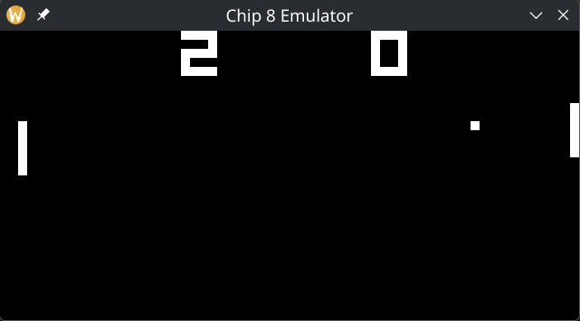
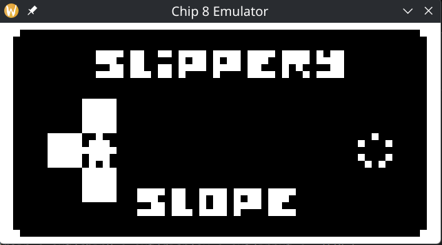
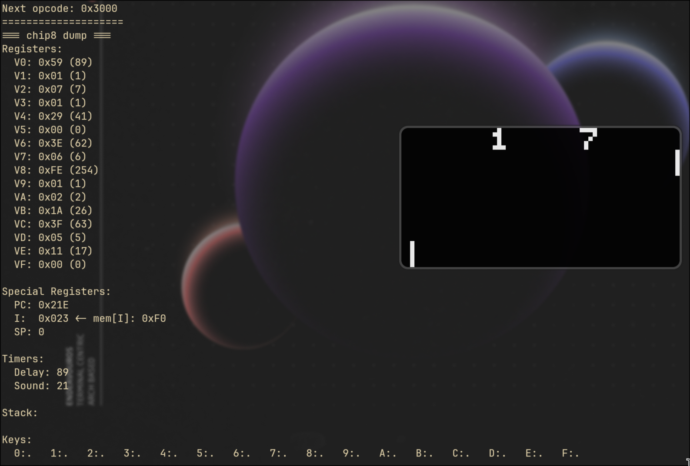
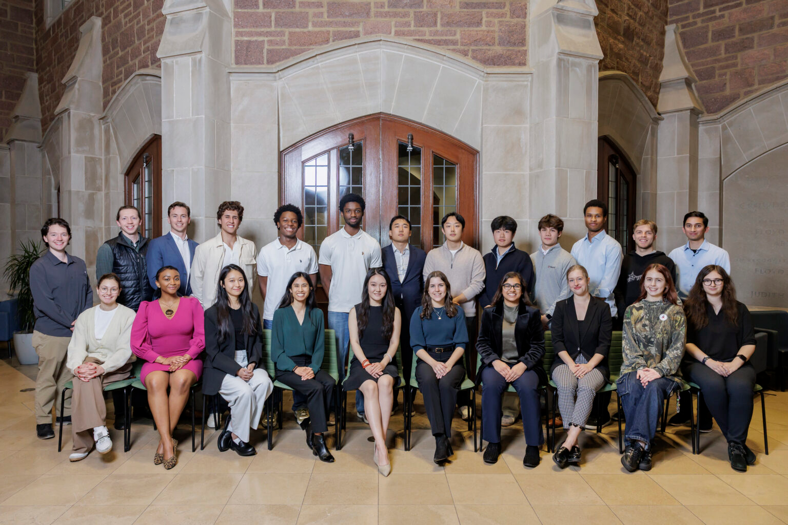
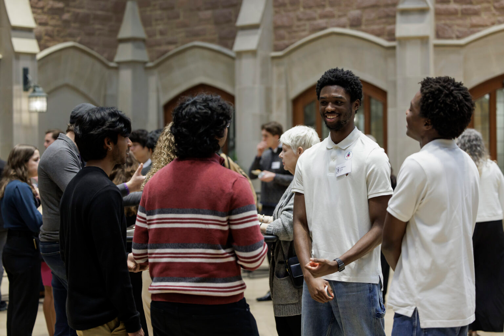

projects/
ChronoPy
Python, PySide6, llama-cpp-python, Local LLM
Desktop application enabling a local LLM to autonomously complete tasks on the user's device with zero external dependencies. Features a custom tool-calling interface, a multi-step memory system, and an embedded model running fully offline via llama-cpp-python.
Geometry Slash
Python, Pygame, OpenCV, MediaPipe — Hack WashU
Computer-vision game using hand-tracking to control cursor movement in a fruit-ninja style experience. Won 1st place in the Emerging category at WashU's premier hackathon.
- Used MediaPipe Hands to detect and track 21 hand landmarks in real time via webcam, mapping index-finger tip coordinates to in-game movement inputs at ~30 fps.
- Integrated OpenCV for frame capture, preprocessing, and visual feedback overlay, ensuring robust performance under varying lighting conditions.
- Led the development on a four person team, designing the core game infrastructure, as well as the computer vision components.
- Presented the live prototype to judges; awarded 1st place in the Emerging Track at Hack WashU 2024.

Eva — EMT Virtual Assistant
Kotlin, Android Studio, Samsung Galaxy XR, Python, FastAPI, Gemini, ElevenLabs, Supabase — Google DevFest Hackathon
XR voice assistant for EMTs that turns field encounter video, isolated speech, and patient context into an electronic Patient Care Report, then uses browser automation to fill existing hospital forms. Winner of Best Use of ElevenLabs at the Google DevFest Hackathon.
- Built the Samsung Galaxy XR app in Kotlin with pinch gestures, Google ASR/TTS, and the "Eva" voice command flow for hands-free EMT documentation.
- Designed a video-processing pipeline using ElevenLabs voice isolation, diarized transcription, and Gemini visual/language inference to generate structured ePCR reports.
- Implemented facial recognition with stored vector embeddings so EMTs can retrieve simulated opt-in MyChart details like medications, allergies, and emergency contacts.
- Used Browser Use to auto-fill mock hospital ePCR forms, demonstrating integration with existing hospital workflows while preserving EMT review/edit control.
Intern X
JavaScript, React, Llama AI, Hunter.io — WashU Meta 8VC Hackathon
Platform connecting students with recruiters and alumni at target companies. Generates intelligent cold emails using Llama API and identifies contacts via Hunter.io. 2nd place overall.
CHIP-8 Emulator
C, SDL2, Emulator Development, Low-Level Systems
CHIP-8 emulator written in C with SDL2 for video and input, supporting classic ROMs with a 64x32 monochrome display and 60 Hz timers.
- Implements the core CPU and full Chip-8 instruction set with opcode decode/execute.
- SDL2-backed renderer with display scaling plus mapped hex keypad input.
- Verbose mode (
-v/--verbose) to dump CPU state each cycle for debugging.



mp3qt
Python, PySide6 / Qt
A lightweight desktop music player built with Python and Qt. Supports local MP3 playlist management with folder browsing, live search filtering, album art display, shuffle, and volume control. Also includes a URL downloader for pulling audio from YouTube, SoundCloud, and similar sources directly into your library. Ships with multiple themes, and allows you to create/import custom themes.


Multiplayer Snake
JavaScript, WebSockets
Real-time two-player snake game with a room-based matchmaking system. Players can create or join named rooms, toggle border wrapping, and make rooms public. Includes live score tracking, a ready-up system, and an in-game chat — all synced over WebSockets.


DogTag
React Native, FastAPI, Product Design, Web scraping, Geolocation APIs
Every year millions of pets go missing in the United States, yet the process for reuniting them with owners is fragmented across paper flyers, Facebook groups, and disconnected shelter databases. DogTag is a mobile platform designed to close that gap. During this project my cofounder, Oseremen Ojiefoh, and I:
- Designed core product flow: photo-based pet reporting, automated geofenced alerts to nearby shelters and volunteers, and a secure in-app messaging layer between owners and rescuers.
- Scraped and normalized public shelter databases to seed a live lost/found index, significantly reducing duplicate manual entry for users.
- Conducted structured customer discovery interviews with 45 pet owners and 20 shelters/rescue volunteers, using findings to prioritize MVP features and de-scope lower-value flows.
- Reached the finalist round of the 2024 Skandalaris Venture Competition, pitching the business model, market size, and technical architecture to a panel of investors and faculty judges.
Index — AI-Powered Handwriting Tutor
Handwriting OCR, LLMs, GPT-4o, React Native, Swift, Mobile UI/UX, ExpressJS, Product Prototyping, Skandalaris Hackathon, Ideabounce Open Mic
A common frustration in math and science education is the gap between a student's written work and meaningful, immediate feedback. Index addresses this by turning a phone or tablet into a real-time tutor that reads handwritten problem sets.
- Built the initial MVP during the Skandalaris Hackathon (Fall 2025), validating the core workflow from handwritten capture to AI-generated feedback.
- Competed in Ideabounce's Open Mic category (Fall 2025), networked with judges, and secured a MacBook donation to support ongoing development.
- Originally enrolled in the Skandalaris Venture Competition, then intentionally stepped back to refocus on customer discovery and problem selection before scaling engineering effort.
- After the donated MacBook proved too old for practical native iOS development, we purchased a newer used MacBook to unblock the product roadmap.
- Took Index through Olin's entrepreneurship ecosystem to refine customer discovery, product positioning, and go-to-market framing.
- Current progress direction: restarting intentionally from scratch, defining critical hypotheses first, then running short customer-discovery test cycles to shape differentiated MVP features for underserved student segments.
- Active learning hypothesis set includes: whether students want hint-first AI walkthroughs, whether handwriting remains preferred for step-based STEM work, and whether real-time nudge UX is preferred over existing note-taking and AI study tools.
- Near-term validation plan: run quick Figma click-demos and controlled user tests, collect survey outcomes across target demographics, and iterate toward a minimal-but-rich MVP before native iOS build-out.
- Building an OCR + LLM pipeline that ingests a photo of handwritten student work, identifies the problem type, traces the student's steps, and returns targeted step-by-step guidance rather than just the answer.
- Designing an immersive digital-notebook UI modeled on GoodNotes and Notability, prioritizing low-latency ink rendering and intuitive annotation gestures.
- Evaluating cross-platform frameworks (Flutter, React Native, Swift/SwiftUI) for performance trade-offs in ink latency, camera access, and on-device ML inference.
- Prototyping the feedback engine with GPT-4o vision for early validation before fine-tuning a smaller model for cost and latency at scale.


Lotanna Okoli
HTML, CSS
This page. Built with HTML, CSS, and JS.